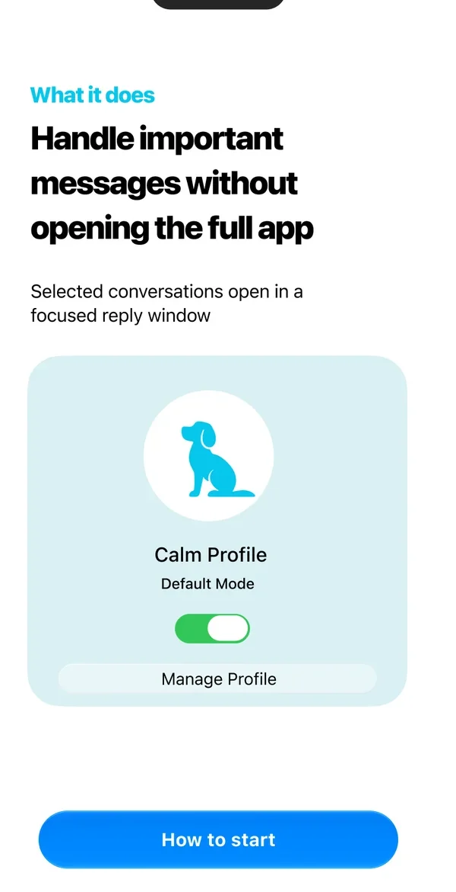
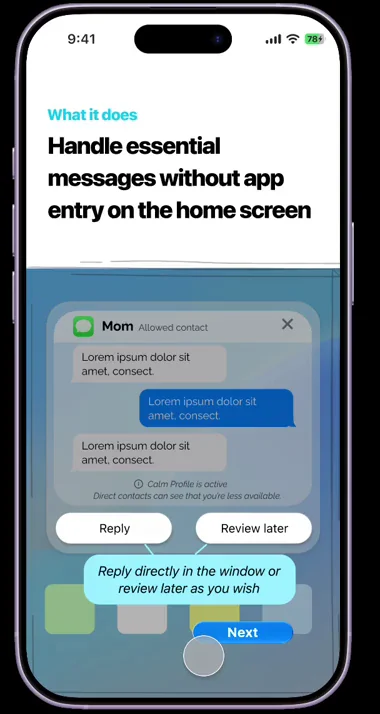
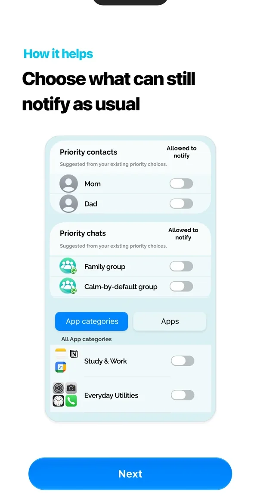
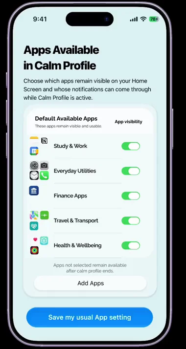
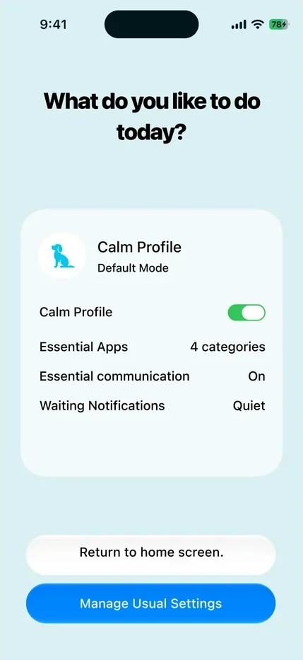
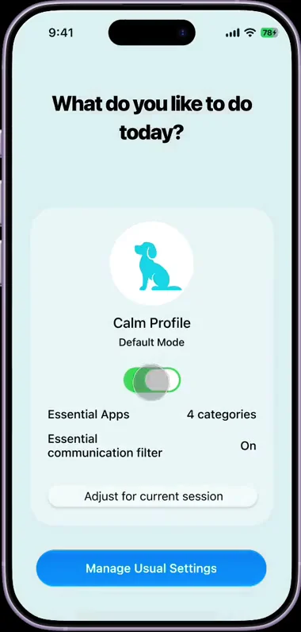
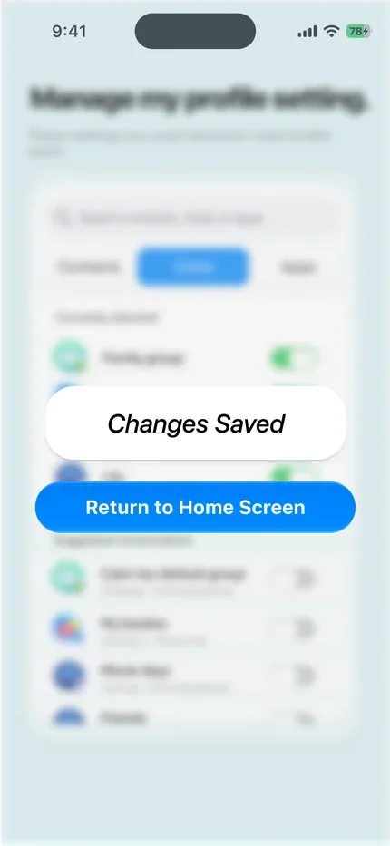
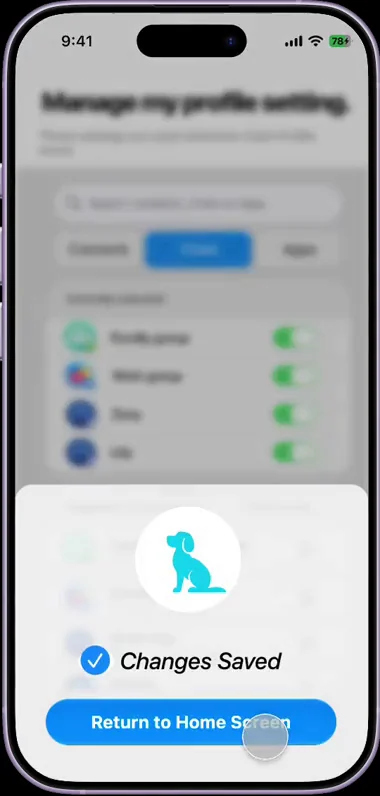
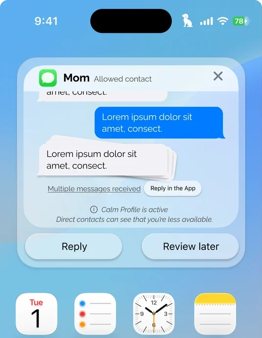
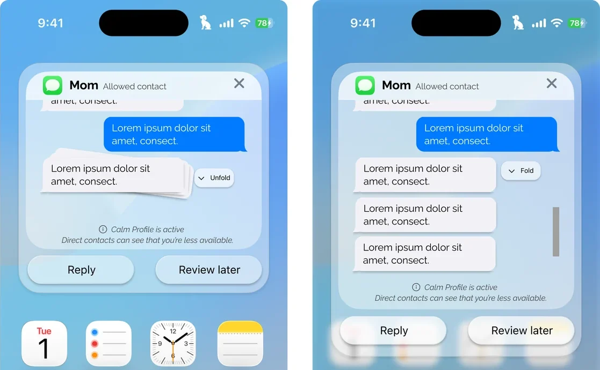

- 1 快速浏览：页首摘要Quick scan: the summary above
- 2 核心故事：正文Core story: the main text
- 3 深入查看：折叠的方法、数据与理论Deep dive: folded methods, data and theory
01专注与联结Focus and connection
屏蔽通知可以保护专注，但代价是失去联结，所以设计必须兼顾两者。Muting notifications can protect focus at the cost of connectedness, so the design had to keep both.
学生需要专注，也需要保持可联系。持续的提示会诱发查看并可能影响专注（Gómez-Muñoz & Baelo, 2026；Veissière & Stendel, 2018），但全部屏蔽只是以一个问题换另一个问题：控制感更强，联结感更弱。项目把通知相关焦虑定义为日常通知交互中产生的瞬时担忧、压力或不安（改编自 Alutaybi 等，2020）。Students need to concentrate, and they also need to stay reachable. Constant cues invite checking and can affect focus (Gómez-Muñoz & Baelo, 2026; Veissière & Stendel, 2018), but muting everything trades one problem for another: more control, less connectedness. The project defines notification-related anxiety as momentary worry, pressure or unease arising from everyday notification interactions (adapted from Alutaybi et al., 2020).
值得为学生设计哪一类通知干预：既保留联结感与响应感，又在自动化、设置成本与控制权之间取得平衡，并减少由查看引发的手机使用、帮助用户回到原来的任务。What kind of notification intervention is worth designing for students: one that keeps connectedness and responsiveness, balances automation, setup effort and control, and limits checking-triggered phone use while supporting a return to the task.
定义设计问题的四项发现Four findings that defined the design problem
- 显著的提示会抢占注意力，并促使人判断其重要性。
依据：工作坊旅程图（第 1–3 阶段）。Salient cues capture attention and prompt an importance judgement.
Evidence: workshop journey maps (stages 1–3). - 重要性取决于情境：不被打扰与保持可达互相冲突。
依据：工作坊讨论；问卷中，消息类通知被评为既重要又分散注意。Importance is contextual: staying undisturbed competes with staying reachable.
Evidence: workshop discussion; in the survey, messaging notifications were rated as both important and distracting. - 查看可能延长手机使用，并妨碍回到原来的任务。
依据：工作坊第 4–5 阶段；见下方问卷图表。Checking can extend phone use and block returning to the task.
Evidence: workshop stages 4–5; survey figure below. - 人们想要控制权，但不想多一份管理负担。
依据：工作坊与问卷数据的综合分析。People want control, but not an additional management burden.
Evidence: synthesis across workshop and survey data.
查看之后，仍然比预期用得更久Continuing to use the phone longer than intended
问卷，n=31，探索性 · 受访者占比Survey, n=31, exploratory · share of respondents
这个数字支持发现 3：它是值得针对性设计的一种模式。它只描述这 31 位受访者，我也是把它与工作坊中的叙述放在一起解读，而不是单独使用。This figure supports finding 3 as a pattern worth designing for. It describes the 31 respondents, and I read it alongside the workshop accounts rather than on its own.
02原型：Calm Profile V2The prototype: Calm Profile V2
研究把目标从“屏蔽更多”改为保持可达，而不必一直查看。由此得出三条设计原则，Calm Profile 就是围绕它们建立的系统级模式。The research reframed the goal from “block more” to stay reachable without having to keep checking. Three design principles came out of it, and Calm Profile is the system-level mode built around them.
- 默认低显著性沟通（基于 Calm Technology）
减少不必要的显著性；以低成本的判断方式让人确认重要性。Low-salience communication by default (based on Calm Technology)
Reduce unnecessary salience; reassure importance with low-effort appraisal. - 以最少的操作实现情境化、选择性的可达
低成本的默认值、可覆盖且透明、选择性与情境化的可达。Contextual, selective reachability with minimal effort
Low-effort defaults, override and transparency, selective and contextual reachability. - 有边界的交互与对任务恢复的支持
限定必要的交互范围；帮助用户回到原来的任务。Bounded interaction and supported task resumption
Bounded necessary interactions; support for returning to the task.
Calm Profile 是一种临时、低成本的系统级模式：在保留必要沟通的同时，降低通知的显著性、后续的持续使用与回到任务的难度。它与“勿扰”不同，不必打开完整应用就能完成必要的沟通。我选择系统级模式，是因为通知来自许多应用，单个第三方应用很难统一管理，还会增加配置工作。Calm Profile is a temporary, low-effort, system-level mode that preserves necessary communication while reducing notification salience, onward engagement and return difficulty. It differs from Do Not Disturb by supporting necessary communication without opening the full app. I chose a system-level mode because notifications come from many apps, so a single third-party app would struggle to manage them and would add configuration work.
- 选择性可达。建议允许的应用（来自问卷数据）以及联系人与聊天（来自已有的优先级设置），始终可编辑。对应发现 2 与 4。Selective reachability. Suggested allowed apps (from survey data) and contacts and chats (from existing priority choices), always editable. Responds to findings 2 and 4.
- 临时自定义。“本次调整”的改动在模式关闭前一直有效。对应发现 2。Temporary customisation. “Adjust for now” changes apply until the mode is turned off. Responds to finding 2.
- 有边界的回复与“稍后查看”。在专注窗口中回复优先消息；其余消息先存起来，没有回复压力。对应发现 3。Bounded replies and “Review later”. Reply to a priority message in a focused window; save the rest without reply pressure. Responds to finding 3.
打开可交互原型（V2）↗Open the interactive prototype (V2) ↗
03三项设计改进Three design refinements
每一项都对应可用性测试的反馈。Each is traced to usability-test feedback.
六位参与者完成情景任务，随后接受访谈并填写问卷。测试要回答的是：人们能否理解、启动并控制这个模式。这是第一版原型在研究它对焦虑或查看行为的影响之前，必须先回答的问题。Six participants completed scenario-based tasks, followed by interviews and a survey. The test asked whether people could understand, start and control the mode: the questions a first prototype has to answer before its effect on anxiety or checking can be studied.
对概念的理解Concept understanding
可用性测试，n=6Usability test, n=6
第二版优先解决三个问题。每项改进都能对应到可用性测试的反馈：Three issues were prioritised for the second version. Each refinement is traced to usability-test feedback:
选择一项改进。V1 屏幕来自项目 deck；V2 画面截取自原型录屏。Choose a refinement. V1 screens come from the project deck; V2 frames are taken from the prototype recordings.
1 · 通过交互来教学1 · Teach through interaction
在行为发生的地方解释这个模式，让设置成为一个步骤，而不是一堂说明课。Explain the mode where it happens, and make setup a step instead of a lecture.
反馈指出：动画不必要，部分配置说明也不必要。同一次测试还发现，引导流程一开始造成了困惑。Feedback noted unnecessary animations and some unnecessary configuration explanations. The same test found that onboarding caused initial confusion.
人们通过使用最快理解一个模式的作用，而每多一屏说明就多一份设置负担，这正是人们表示不想要的（发现 4）。People learn what a mode does fastest by using it, and every extra explanatory screen is more setup, which people said they did not want (finding 4).
解释这个模式的作用Explaining what the mode does


- V1 模式用文字解释，放在一张静态卡片旁边，一次一屏。V1 The mode is explained in text beside a static card, one screen at a time.
- V2 解释直接放在一个实时的通知窗口上，提示气泡说明 Reply 与 Review later 的作用。V2 The explanation sits on a live notification window, and a callout says what Reply and Review later do.
设置哪些可以通知Setting up what can notify


- V1 哪些仍可通知，只是一张设置的示意图，开关都是关闭的。V1 What can still notify is shown as a picture of the setting, with the switches off.
- V2 同一个决定变成真实的一步：选择保留哪些应用，然后保存。V2 The same decision is a real step: choose which apps stay available, then save.
2 · 让模式状态和保存结果看得见2 · Make the mode and the save visible
只有人们看得出模式已开启，平静模式才有用；保存提示也不该看起来像又一个按钮。A calm mode only helps if people can tell it is on, and a save should not look like another button.
反馈指出：模式切换不够醒目，保存反馈看起来像一个按钮。测试还发现，激活与状态变化不够显眼。Feedback noted that mode switching was not salient and that the saving feedback looked like a button. The test found that activation and state changes lacked salience.
如果看不出模式是否开启，人们就会继续查看手机；看起来像按钮的保存提示，则会引人再点一次。If people cannot tell the mode is on, they keep checking; a save message that looks like a button invites a second tap.
看出模式已开启Seeing that the mode is on


- V1 激活只体现为一个开关，下方有一行小字提示返回主屏幕。V1 Activation shows as a toggle, with a small line telling you to return to the home screen.
- V2 状态用文字写明（“Essential communication filter · On”），而不只靠开关表示。V2 The state is named in words (“Essential communication filter · On”), not only by the toggle.
- V2 “Adjust for current session”与状态放在同一张卡片里。V2 “Adjust for current session” sits inside the same card as the state.
确认已保存Confirming a save


- V1 “Changes Saved”是一个白色胶囊，看起来像它下方的蓝色按钮。V1 “Changes Saved” appears as a white pill that looks like the blue button beneath it.
- V2 确认信息是一张带 Calm Profile 图标和对勾的卡片，与“Return to Home Screen”按钮分开。V2 The confirmation is a card with the Calm Profile icon and a check mark, apart from the “Return to Home Screen” button.
3 · 不打开应用也能保留消息上下文3 · Keep message context without opening the app
让人不离开受限的窗口，就能读完一叠消息。Let people read a stack of messages without leaving the bounded window.
反馈指出：受限的回复上下文迫使用户打开完整应用。测试还发现，上下文和回复选项显得太有限。Feedback noted that the restricted reply context forced users to open the full app. The test found that context and reply options felt too limited.
“有边界的互动”本意是不让一次必要的查看变成进入完整应用的一趟旅程（发现 3），所以上下文必须在窗口内就能读到。Bounded interaction is meant to stop a necessary check turning into a trip through the full app (finding 3), so the context has to be readable inside the window.
一次读几条消息Reading several messages


- V1 多条消息折叠成“Multiple messages received”，想读只能点“Reply in the App”。V1 Several messages collapse into “Multiple messages received”, and the only way to read them is “Reply in the App”.
- V2 堆叠的消息有一个“Unfold”控件，消息可以就地展开。V2 The stack has an “Unfold” control, so the messages open in place.
- V2 展开的消息在窗口内滚动，“Fold”控件可收回堆叠，Reply 与 Review later 始终触手可及。V2 Unfolded messages scroll inside the window, a “Fold” control returns to the stack, and Reply and Review later stay in reach.
04测试显示了什么，以及下一步What the test showed, and what comes next
参与者能够理解这个概念，觉得自己可以控制它，也能操作这个原型，他们的反馈促成了三项设计改进。Calm Profile 是否能降低通知焦虑或查看行为，以及人们会不会持续使用，是下一项研究要回答的问题。Participants could understand the concept, felt able to control it and could operate the prototype, and their feedback informed three design refinements. Whether Calm Profile reduces notification anxiety or checking, and whether people keep using it, is the question for the next study.
- 样本较小且来自学生；问卷是探索性的；原型是可交互的 Figma 原型，尚未上线，也没有在日常使用中被研究过。Samples are small and from students; the survey is exploratory; the prototype is an interactive Figma prototype that has not been launched or studied in daily use.
- 我会带走的经验：交互梳理应当延伸到交互瞬间之外；行为框架有助于整理混合方法的发现，但应用时要谨慎，避免把定性研究的复杂性压平。What I would carry forward: interaction mapping should extend beyond the moment of interaction; behavioural frameworks help organise mixed-method findings but must be applied cautiously so they do not flatten qualitative complexity.
下一项研究Next study
使用可运行的版本做现场对比，测量瞬时的通知压力、查看冲动、回到任务所需的时间、重要消息的漏看率和继续使用的意愿；同时测量设备的能耗与运算开销。An in-situ comparison with a working build, measuring momentary notification pressure, urge to check, time to return to the task, rate of missed important messages and willingness to keep using it; plus device energy and processing measurements.
05深入查看：证据、方法与完整旅程Deep dive: evidence, methods and the full journey
按阶段探索这段旅程Explore the journey stage by stage
请选择一个阶段。这里的洞察是我的解读；样本小且属于探索性，设计回应是设计决策，不等于某个功能的实测效果。Choose a stage. Insights are my interpretation; the samples are small and exploratory, and a design response is a design decision, not a measured effect of one feature.
阶段 1 · 通知到来之前Stage 1 · Before the notification
Calm 必须容易开启，否则设置本身就会成为新的负担。Calm has to be easy to turn on, or setup becomes one more burden.
参与者正沉浸在某项活动中。Participants were immersed in an activity.
这时压力尚未出现，所以操作成本很关键：如果开启平静模式还需要设置，就会增加人们明确表示不想要的管理负担（发现 4）。Pressure has not started yet, so effort matters here: if turning on a calm mode needs setup, it adds the management burden people said they did not want (finding 4).
工作坊旅程图（阶段 1）；发现 4 来自工作坊与问卷数据的综合分析。Workshop journey maps (stage 1); finding 4 draws on synthesis across workshop and survey data.
低成本启动。可以从控制中心快捷方式启动 Calm Profile，使用低成本的默认值，几乎不需要配置。Low-effort activation. Calm Profile can be started from the Control Center shortcut, with low-effort defaults and minimal configuration.
阶段 2 · 通知到达Stage 2 · Notification arrives
显眼的提示会在人们还没决定要不要看之前就吸走注意力。Cues that stand out pull attention before anyone has chosen to look.
显著的提示会抢占注意力。Salient cues capture attention.
显眼的提示会吸引注意力，并促使人判断其重要性（发现 1）。Cues that stand out pull attention and prompt an importance judgement (finding 1).
工作坊旅程图（阶段 1–3）。Workshop journey maps (stages 1–3).
默认低显著性。设计原则是基于 Calm Technology 的低显著性沟通；对应的需求是减少不必要的通知显著性。Low-salience by default. The design principle is low-salience communication, based on Calm Technology; the requirement was to reduce unnecessary notification salience.
阶段 3 · 即时判断与感受Stage 3 · Immediate appraisal and feeling
不知道一条消息重不重要，正是产生查看冲动的原因。Not knowing whether a message matters is what creates the urge to check.
“这条重要吗？”不确定性带来查看的压力。“Is this important?” Uncertainty creates checking pressure.
重要性取决于情境：不被打扰与保持可达互相冲突，所以不知道某件事是否重要，就会产生想去查看的压力（发现 1 与 2）。Importance is contextual: staying undisturbed competes with staying reachable, so not knowing whether something matters creates pressure to check (findings 1 and 2).
工作坊旅程图与讨论（阶段 3）。在探索性问卷（n=31）中，消息类通知被评为既重要又分散注意。Workshop journey maps and discussion (stage 3). In the exploratory survey (n=31), messaging notifications were rated as both important and distracting.
选择性可达与临时自定义。建议允许的应用（来自问卷数据）和联系人（来自已有的优先级设置），始终可编辑；“本次调整”的改动在模式关闭前一直有效。Selective reachability and temporary customisation. Suggested allowed apps (from survey data) and contacts (from existing priority choices), always editable; “Adjust for now” changes apply until the mode is turned off.
阶段 4 · 行为或回应Stage 4 · Behaviour or response
一次必要的查看，不该变成进入整个应用的一趟旅程。A necessary check should not become a trip into the whole app.
一次必要的查看可能会打开整个应用。A necessary check can open the whole app.
为查看一条必要消息，可能一路点进完整应用，导致手机使用时间变长（发现 3）。Checking one necessary message can lead into the full app and longer phone use (finding 3).
工作坊阶段 4–5。在探索性问卷中，31 位受访者里有 67.7% 表示查看之后经常比预期用得更久。Workshop stages 4–5. In the exploratory survey, 67.7% of the 31 respondents reported often continuing to use the phone longer than intended after checking.
有边界的交互。在专注窗口里回复优先消息，而不是打开完整应用。Bounded interaction. Reply to a priority message in a focused window instead of opening the full app.
阶段 5 · 事后影响Stage 5 · After-effects
压力会比通知本身持续更久：回到任务也是问题的一部分。The pressure outlasts the notification: getting back to the task is part of the problem.
数字漂移，难以回到原来的任务。Digital drift and difficulty returning to the task.
通知处理完之后，压力可能仍在继续：使用时间被拉长，就更难回到之前的活动（发现 3）。Pressure can continue after the notification is dealt with: extended use makes it harder to return to the earlier activity (finding 3).
工作坊阶段 4–5；以及上方探索性问卷图表（n=31）。Workshop stages 4–5; the exploratory survey figure above (n=31).
“稍后查看”。先把其余消息存起来，没有回复压力，有助于回到任务。“Review later”. Save the rest of the messages without reply pressure, which supports returning to the task.
深入查看Deep dive现有做法及其取舍Existing approaches and their trade-offs
设计之前，我梳理了现有做法。每一种都解决了一部分问题，同时带来新的问题：Before designing, I reviewed existing approaches. Each one solves part of the problem and creates another:
| 做法（来源）Approach (source) | 报告的益处Reported benefit | 报告的代价Reported trade-off |
|---|---|---|
| 关闭或静音通知（Dekker 等，2025）Disabling or muting notifications (Dekker et al., 2025) | 感知控制与效率提升Improved perceived control and productivity | 联结感下降，工作负担、错失恐惧（FOMO）与焦虑增加；拿起手机次数更多、屏幕时间更长（Pielot & Rello, 2017；Liao & Sundar, 2022）Decreased connectedness, more workload and FOMO, anxiety; more phone pick-ups and longer screen time (Pielot & Rello, 2017; Liao & Sundar, 2022) |
| 灰度显示（Holte 等，2023）Greyscale display (Holte et al., 2023) | 焦虑降低Reduced anxiety | 拿起手机的次数没有显著变化Did not significantly change phone pick-ups |
| 每天三次集中推送（Fitz 等，2019）Batching three times a day (Fitz et al., 2019) | 解锁次数减少，控制感增强Fewer unlocks, more control | 重要沟通被延迟，且缺少情境Essential communication delayed and not contextualised |
| 基于边界的通知管理器（Gross & Mueller, 2021）Boundary-based notification manager (Gross & Mueller, 2021) | 把学习与个人领域分开Separates study and personal spheres | 可能不适合学习与生活边界模糊的学生May not suit students whose study–life boundaries blur |
| 传感器推断式与可自定义的勿扰模式（Qin 等，2014；Jarupreechachan 等，2023）Sensor-inferred vs customisable DND (Qin et al., 2014; Jarupreechachan et al., 2023) | 手动操作更少，或控制更多Less manual effort, or more control | 需要在自动化出错与配置负担之间权衡Trade-off between automation errors and configuration burden |
深入查看Deep dive发现 → 设计需求 → 原则Findings → design requirements → principles
| 研究洞察Research insight | 设计需求Design requirement | 设计原则Design principle |
|---|---|---|
| 显著的提示会抢占注意力Salient cues capture attention | 减少不必要的通知显著性Reduce unnecessary notification salience | 默认低显著性沟通（基于 Calm Technology）Low-salience communication by default (based on Calm Technology) |
| 重要性判断是自动发生的，且要花力气；产生查看压力与错失恐惧（FOMO）Importance appraisal is automatic and takes effort; checking pressure and FOMO | 以低成本的判断方式确认重要性Reassure importance with low-effort appraisal | |
| 配置很容易变成认知负担Configuration easily becomes a cognitive burden | 低成本的默认值；尽量少配置Low-effort defaults; minimal configuration | 以最少的操作实现情境化、选择性的可达Contextual and selective reachability with minimal effort |
| 用户重视自主权Users value autonomy | 可覆盖、透明、可控Override, transparency and control | |
| 重要性取决于情境Importance is contextual | 保留选择性、情境化的可达Preserve selective, contextual reachability | |
| 手机使用时间延长与回到任务变难有关Extended phone use is related to difficulty returning | 限定必要的交互；支持任务恢复Bounded necessary interactions; support task resumption | 有边界的交互与对任务恢复的支持Bounded interaction and supported task resumption |
深入查看Deep dive工作坊成果：旅程图与阶段表Workshop output: the journey map and stage table
| 阶段Stage | 参与者的描述What participants described | 设计机会Design opportunity |
|---|---|---|
| 1 通知到来之前1 Before the notification | 沉浸在某项活动中Immersed in an activity | 低成本启动Low-effort activation |
| 2 通知到达2 Notification arrives | 显著的提示会抢占注意力Salient cues capture attention | 减少不必要的显著性Reduce unnecessary salience |
| 3 即时判断与感受3 Immediate appraisal and feeling | “这条重要吗？”不确定性带来查看的压力“Is this important?” Uncertainty creates checking pressure | 支持重要性判断Support importance judgement |
| 4 行为或回应4 Behaviour or response | 一次必要的查看可能会打开整个应用A necessary check can open the whole app | 限定必要的查看Bound necessary checking |
| 5 事后影响5 After-effects | 数字漂移，难以回到任务Digital drift and difficult return to the task | 支持回到任务Support return to task |
深入查看Deep dive完整的可用性发现Usability findings in full
| 可用性发现Usability finding | 有效之处What worked | 不足之处What did not |
|---|---|---|
| 通过使用即可学会Learnable through use | 通过使用理解了概念；6 位参与者中有 6 位把概念理解度评为 4–5 分Concept understood through use; 6 of 6 rated concept understanding 4–5 | 引导流程一开始造成了困惑Onboarding caused initial confusion |
| 控制权与配置负担Control vs configuration burden | 可编辑的默认值减轻了操作负担Editable defaults reduced effort | 人们对手动与自动控制的偏好不一Preferences varied between manual and automated control |
| 启动与状态是否清晰Activation and state clarity | 启动之后的使用总体上比较容易Post-activation use was generally easy | 启动和状态变化不够醒目Activation and state changes lacked salience |
| 有边界的沟通Bounded communication | 减少了接触无关应用内容的机会Reduced exposure to unrelated app content | 情境和回复选项显得太有限Context and reply options felt too limited |
| “专注”与“平静”的定位Focus vs Calm positioning | 有潜力扩展到更广泛的沉浸式场景Potential for broader immersive contexts | 主要被看作学习或工作工具Mainly perceived as a study or work tool |
深入查看Deep dive我的角色与研究设计My role and research design
个人硕士项目。从文献综述、工作坊到问卷、分析、原型与可用性测试，研究全程由我完成。每种方法回答的是不同的问题，所以我把它们配合使用，而不是反复验证同一个发现。Individual MSc project. I ran the research from literature review and workshops to survey, analysis, prototype and usability test. Each method answered a different question, so I used them together rather than as repeated confirmation of the same finding.
我负责Mine
- 确定研究问题与混合方法计划Defined the research question and mixed-method plan
- 组织两场共创工作坊并开展在线问卷Ran two co-design workshops and the online survey
- 分析数据（主题分析；COM-B 与行为改变之轮；Fogg 模型）Analysed the data (thematic analysis; COM-B and Behaviour Change Wheel; Fogg model)
- 把发现转化为设计需求与原则Turned findings into design requirements and principles
- 设计 Calm Profile，并搭建可交互的 Figma 原型Designed Calm Profile and built the interactive Figma prototype
- 开展可用性测试，并完成由它带来的设计改进Ran the usability test and made the design refinements it informed
共同参与或获得的支持Shared or supported
- 硕士导师的指导与反馈MSc supervision and feedback
- 同伴在可用性测试前帮助试跑了研究流程Peers helped pilot-test the study procedure before the usability test
- 工作坊与测试的参与者提供了数据Workshop and test participants contributed the data
研究设计：问题、方法与理由Research design: question, method and why
| 阶段Stage | 问题Question | 方法与样本Method and sample | 为什么选这个方法Why this method |
|---|---|---|---|
| 理解问题Understand the problem | 压力出现在交互的哪些环节？学生想要什么？Where along the interaction does pressure arise, and what do students want? | 两场共创工作坊，n=10：通知旅程绘制、焦点小组讨论、概念卡共创Two co-design workshops, n=10: notification journey mapping, focus-group discussion, concept-card co-design | 压力是在一连串时刻中逐步展开的；与参与者一起绘制旅程，能看出压力出现在哪里，也让他们自己提出回应方式。Pressure unfolds over a sequence of moments; mapping it with participants showed where, and let them propose responses. |
| 补充更多证据Explore further evidence | 工作坊中的主题是否也出现在另一批受访者中？变量之间有什么关系？Do the workshop themes appear in another group of respondents, and how do the variables relate? | 在线问卷，n=31（探索性）Online survey, n=31 (exploratory) | 用一次快速而更宽的观察来看工作坊主题是否重复出现。它的作用是看主题是否重现，而不是推断更大的人群。A quick, wider look at whether workshop themes recur. Its role is to see whether themes recur, not to estimate for a wider population. |
| 转化为设计Translate to design | 这个干预应该做什么，又应该避免什么？What should the intervention do, and what should it avoid? | 主题分析；COM-B 与行为改变之轮（Michie 等，2011）；Fogg 模型Thematic analysis; COM-B with the Behaviour Change Wheel (Michie et al., 2011); Fogg model | 行为框架把混合方法的发现整理成目标行为、需求与原则。Behavioural frameworks organised mixed-method findings into target behaviour, requirements and principles. |
| 评估原型Evaluate the prototype | 人们能否理解、启动并控制它？Can people understand, start and control it? | 情景任务、访谈与问卷，n=6Scenario-based tasks, interviews and a survey, n=6 | 在检验效果之前，先做一次早期检查：这个概念是否容易理解、是否可控。An early check of whether the concept is understandable and controllable, before testing its effects. |
深入查看Deep dive产品可行性评估（设计阶段）Product feasibility assessment (design stage)
项目止于一个经过测试的原型。它能给产品团队的是：一个明确的概念、每项设计选择的依据，以及一份清晰的待解问题清单。The project ends at a tested prototype. What it gives a product team is a defined concept, a rationale for each design choice and a clear list of open questions.
| 方面Area | 评估（设计阶段）Assessment (design stage) |
|---|---|
| 潜在益处Potential benefit | 让通知管理更容易上手，帮助用户守住自己的数字平静。More accessible notification management that could help users protect their digital calm. |
| 风险：回复压力Risk: reply pressure | 收件箱本身可能带来回复压力。缓解方式：“稍后查看”功能。The inbox could itself create reply pressure. Mitigation: a “Review later” function. |
| 风险：数据与错误Risk: data and errors | 会用到联系人、日历与通知的元数据；存在漏判（假阴性）的风险。缓解方式：透明的建议、手动覆盖，以及本地处理。为紧急联系人设置绕过只是未来的考虑，并不属于最终原型。Uses contact, calendar and notification metadata; risk of false negatives. Mitigation: transparent suggestions, manual overrides and local processing. An emergency bypass for urgent contacts is a future consideration and is not part of the final prototype. |
| 可行性Feasibility | 无需额外硬件。需要跨应用集成与系统级权限。处理所带来的能耗仍有待测量。No extra hardware. Needs cross-app integration and platform-level permissions. Processing energy use still has to be measured. |
| 成本Cost | 开发与维护成本尚未估算。Development and maintenance costs have not been quantified. |